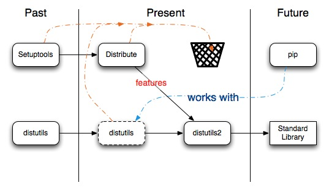

October 22, 2013
Joseph Sheedy
joseph.sheedy@gmail.com
Git repository: https://github.com/UWPCE-PythonCert/Python300-SystemDevelopmentWithPython
Before we start building extensions, an overview of building and packaging Python modules
A package is an archive containing all the files required by a project, including metadata required by the package management system
We'll practice by wrapping this add() function into a distributable package:
def add(x, y):
return x+y
A module included in the standard library for packaging Python projects
It has been around for a long time, and is at the core of present day packaging
Distutils is missing a few things
Then came PyPi
and setuptools
...and distribute/pip
http://docs.python.org/2/distutils/introduction.html
write a setup.py script
from distutils.core import setup, Extension
setup(
name='add',
version='1.0',
description='Test description',
ext_modules=[],
py_modules=['add'],
)
python setup.py build
python setup.py sdist
Now your package is wrapped up in dist/, ready to distribute
Distutils isn't the only package for packaging, there is also setuptools, distribute, and distutils2
distutils is the standard, works well until you need it to get complicated. Then look at distutils2. 
To keep focus on the integration tools, we're going to focus on integrating the following the add() function into our Python application
#include <stdio.h>
int add(int x, int y) {
return x+y;
}
int main(void) {
int w = 0;
int q = 2;
printf("test\n");
printf("%d", add(w,q));
}
all: add; gcc -o add add.c
% make
./add
3 + 2 = 5
Write your function in pure C using the Python API and import it into Python
Further reading
You'll need the Python dev package installed on your system
Pull in the Python API to your C code via
#include <Python.h>
/*
Note: Since Python may define some pre-processor definitions which affect the standard headers on some systems, you must include Python.h before any standard headers are included.
stdio.h, string.h, errno.h, and stdlib.h are included for you.
*/
Function arguments must be parsed on the way in and the way out
On the way in, we can call PyArg_ParseTuple
if (!PyArg_ParseTuple(args, "s", &var1, ...))
return NULL;
http://docs.python.org/2/c-api/arg.html#PyArg_ParseTuple
On the way out, we can call Py_BuildValue
PyObject* Py_BuildValue(const char *format, ...)
First, register the name and address of your function in the method table
static PyMethodDef AddMethods[] = {
{"add", add, METH_VARARGS, "add two numbers"}, /* METH_VARARGS or META_VARARGS | METH_KEYWORDS */
{NULL, NULL, 0, NULL}
};
PyImport_AddModule("add");
Py_InitModule("add", AddMethods);
Now you're ready to initialize the Python environment with
Py_SetProgramName(char *name)
Py_Initialize()
#include
static PyObject *
add(PyObject *self, PyObject *args)
{
int x;
int y;
int sts;
if (!PyArg_ParseTuple(args, "ii", &x, &y))
return NULL;
sts = x+y;
return Py_BuildValue("i", sts);
}
// Module's method table and initialization function
// See: http://docs.python.org/extending/extending.html#the-module-s-method-table-and-initialization-function
static PyMethodDef AddMethods[] = {
{"add", add, METH_VARARGS, "add two numbers"},
{NULL, NULL, 0, NULL}
};
void initadd(void) {
// Module's initialization function
// Will be called again if you use Python's reload()
PyImport_AddModule("add");
Py_InitModule("add", AddMethods);
}
int main(int argc, char *argv[]) {
Py_SetProgramName(argv[0]);
Py_Initialize();
initadd();
return 0;
}
Now let's build our module with distutils
Simple compilation details are handled by distutils
python setup.py build
Now you can changedir to build/(arch-dependent-directory)/ and "import add; add.add(2,4)" from your Python code
A language agnostic tool for integrating C/C++ code with high level languages
Advantages
Further reading
SWIG doesn't require modification to your C source code
The language interface is defined by an "interface file", usually with a suffix of .i
From there, SWIG can generate interfaces for the languages it supports
The interface file contains ANSI C prototypes and variable declarations
The %module directive defines the name of the module that will be created by SWIG
To create a SWIG wrapper:
python -c 'import add;print add.add(4,5)'http://www.swig.org/Doc2.0/SWIGDocumentation.html#Introduction_nn5
SWIG will create interfaces for all supported languages
ruby extconf.rb
swig -ruby add.i
make
ruby -e 'require "add"; print Add.add(5,6).to_s + "\n"'
Further reading
A foreign function interface in Python
binds functions in shared libraries to Python functions
from ctypes import *
add = cdll.LoadLibrary("add.so")
print add.add(3,4)
Further reading
None, integers, longs, byte strings and unicode strings are the only native Python objects that can directly be used as parameters in these function calls.
The rest must be wrapped in a ctypes data type
For instance, floats can be wrapped in c_double() before handing off to ctypes
printf("An int %d, a double %f\n", 1234, c_double(3.14))
You can allow your own classes to be passed to ctypes via the _as_parameter_ instance variable, as long as they can be resolved to an integer or string.
class MyObject(object):
def __init__(self, number):
self._as_parameter_ = number
obj = MyObject(32)
printf("object value: %d\n", obj)
http://docs.python.org/2/library/ctypes.html#fundamental-data-types
A Python like language with static types which compiles down to Python extensions written in C
def add(int x, int y):
cdef int result=0
result = x + y
return result
Further reading
first, install cython with "pip install cython"
Cython files end in the .pyx extension
Cython functions can be declared two ways:
Once your .pyx file is created, it is converted to C via
cython cy_add.pyx
Generate "annoted" C code in HTML
cython -a cy_add.pyx
To build your Python extension:
python cy_setup.py build_ext --inplace # note Cython defines its' own build_ext in Cython.Distutils.build_ext
Consider a more expensive function
def f(x):
return x**2-x
def integrate_f(a, b, N):
s = 0
dx = (b-a)/N
for i in range(N):
s += f(a+i*dx)
return s * dx
def f(x):
return x**2-x
def integrate_f(a, b, N):
s = 0
dx = (b-a)/N
for i in range(N):
s += f(a+i*dx)
return s * dx
There are several other ways to integrate with C. We say a passing hello to them.
http://wiki.python.org/moin/Pyrex
Superceded by Cython
http://www.boost.org/doc/libs/1_41_0/libs/python/doc/index.html
A C++ library which interfaces Python and C++
Wraps C++ functions in BOOST wrappers, compiled with your regular C++ compiler
https://code.google.com/p/shedskin/
A pure python compiler that makes type assumptions based on type inference
Experimental, but growing
http://wiki.python.org/moin/IntegratingPythonWithOtherLanguages
/
#